......衣比呀呀~衣比衣比呀!!
......衣比呀呀~衣比衣比呀!!
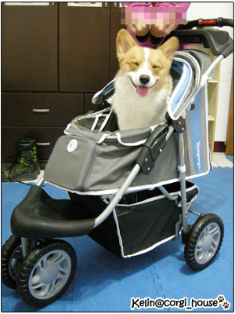
耶屎!我也有推車可以坐嘍!! 開心開心~~
麻麻幫他取名叫媽媽號=嬤嬤耗
媽媽號顧名思義~是因為車是麻麻要開的~當然是掛她名下嘍! 
嬤嬤耗咧!?是因為阿嬤看到麻麻買這台推車給我.....真的會罵罵耗 (哭..) 
我媽到現在還沒看到這台車....
好緊張吶~摩卡卡咱們母子倆如果遇到阿嬤到底要不要裝作不認識啊!! 哈 哈.
哈.
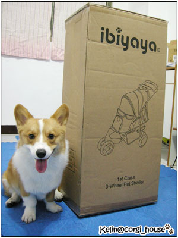
不過嚴格來說~這車我也沒花到錢!! 是馬先生送的 哈
是滴!!!我用了消費券帶了這台blue子彈推車回家~
從一有消費券我就打算買了~
肖想很久了但一直買不下手!! 就算我是溺愛孩子的麻麻...
也只是個領薪水的小老百姓啊!! 
話雖如此..........我還是很怕推出去遇到我老媽呀!! 
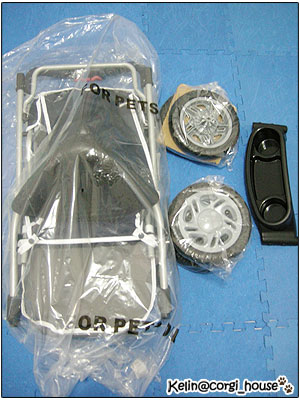 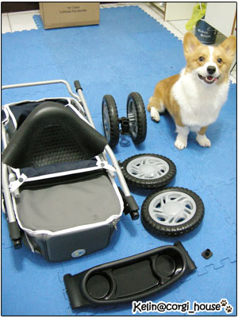
開箱嘍!!配件還真簡單.....打開才4樣而已
我想組裝應該難不到我吧!! 

小乘客來嘍!!那輪子好大一個啊~~當初我就是看上它的大輪子
感覺很粗勇..耐操!!而且我推過四輪車~~
可能是柯基比較重的關係!推起來不是很順暢
所以就選了衣比呀呀的這款~整體造型看起來比較帥氣時尚一點!哈
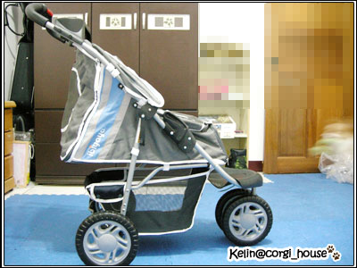
組裝果然簡單快速~5分鐘不到就完成了~鏘鏘鏘鏘!
我日思夜夢的推車終於在我家了~
這款是第1代的~目前據說已經停產了(打去衣比呀呀問的)!!
但第2代的花色我很不喜歡~也聽說近期要出第3代
(但只是第1代改版,也就是換個顏色而已,我想是第2代不好賣吧!?!?)
so因為沒有太大的差異性,我們還是選了第1代
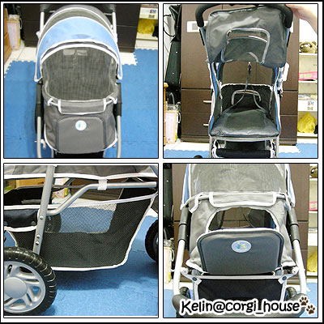
這款推車出很久了!我想大家都不陌生~就省略介紹細節...
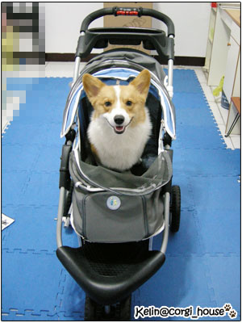
先讓摩卡卡試乘一下~再把網在蓋上
測試一下他的反應~~妙了~從他上車開始,一整個很冷靜耶他!
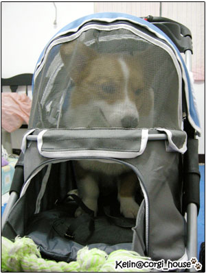 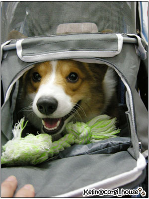
前方還有一個寵物觀景台~想讓他自己鑽出來
拿了綠骨頭引誘!! 出來呀...阿卡卡
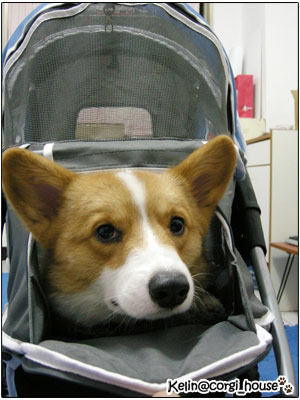
咚!! 哈哈哈...大頭塞爆觀景台  好可愛歐!!
好可愛歐!!
我決定以後出門都只讓他露大頭了....好cute
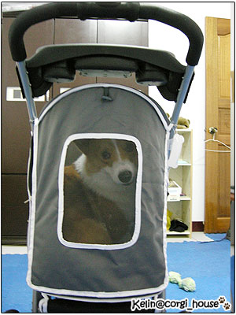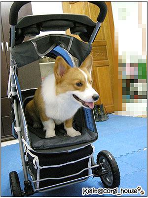
接下來是後車箱..好大一個門啊!!是遇到危險可以棄車逃亡快一點嗎? 
買了車車摩卡卡感覺也很開心~帶他在家裡轉來轉去的
臉都是笑嘻嘻的!!坐著不用走應該很爽吧!
我們終於可以一起去逛夜市,一起去餐廳吃飯,一起逛百貨公司嘍!! 拍手拍手


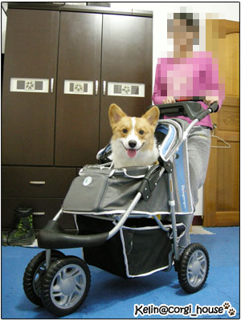
套上一句忘了在那裡看到的話 ^^
"錢那開落去,效果就出來ㄚ" (台語) 
未完待續....